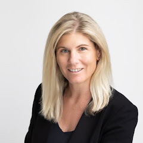
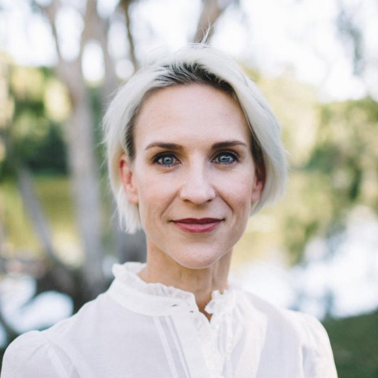

Built by the people
carrying the load.
MumAI is made by three operators who have spent their careers building and scaling technology companies — and their evenings running the family logistics no one else sees. Nine kids between them.
It started with
a joke at dinner.
Years before that dinner, Wendy and Ekaterina sat near each other at Canva — one with three kids, one with four — comparing notes between meetings on what it actually takes to hold down a full-time job and a family at the same time. They went on to work together twice, at Canva and later at Grow, and the conversation followed them. They kept describing the help they wished existed. At the time it didn't: this was before large language models changed what software could do, so it stayed a thing they talked about.
Then, in 2026, Lauren was at dinner with friends and the conversation landed in the same place. Someone joked that what every household really needed was a MumAI. Her husband's version was sharper: she already was one — the family's MumAI, holding every date and deadline in her head, running like a machine.
"You already are their MumAI."
It got a laugh at the table. It landed differently for Lauren. The joke was funny because it was true — and, for the first time, the technology to actually build the thing existed.
She called Wendy, who she'd worked with years earlier. Wendy brought in Ekaterina. The assistant the two of them had been describing to each other for years was suddenly buildable, and they had the people to build it.
Between the three of them: nine kids, three full-time careers, and three partners building careers of their own. They didn't research this user. They are her.
Three founders,
one shared problem.

Lauren Williams is a technology business builder with two decades' experience building and scaling companies.
As CEO of CarsGuide, she grew revenue four-fold and took the business from unprofitable to profitable, beating the rule of 40 and leading to its sale to Cox Automotive, a US-based software company. She was previously Founder and COO of Getaway Lounge, a travel e-commerce business sold by Nine Entertainment and now known as Luxury Escapes.
Lauren holds Honours in Economics from Harvard University. Over the past six years she has served as a public and private company director across growth technology businesses.

Wendy Glasgow has spent twenty years building technology, most of it in digital products, data and AI.
As Canva's first Head of Data she grew the practice into a 350-person team spanning machine learning, data science and data engineering. She has twice served as Chief Technology Officer — at ASX-listed OFX, and at Grow Inc, where she shipped production AI inside an APRA-regulated superannuation platform and scaled both the platform and funds under management ten-fold. Earlier she led Google's data solutions and consulting practice across APAC, and delivered global products at Microsoft across Europe and Asia.
Wendy holds a Bachelor of Laws alongside a Bachelor of Information Technology, and privacy has been central to her work throughout her career. She has served on the board of Barnardos Australia, one of the country's leading children's charities, for seven years.
Ekaterina Gasparian is an engineering leader who has spent her career building AI products used by hundreds of millions of people.
She began at Google in Dublin, working on search product quality operations, before moving to Sydney and completing a Master's at UNSW with a double specialisation in Data Science & Engineering and Artificial Intelligence, graduating with honours.
At Canva she helped build Canva AI — personalising the experience on a platform now used by 265 million people every month — and worked on design AI. She was most recently Head of Engineering at Grow Inc, a fintech business in the superannuation sector.
Want to try it
first?
MumAI is in early testing. Leave your email and we'll be in touch when the first spots open up.
Get early access